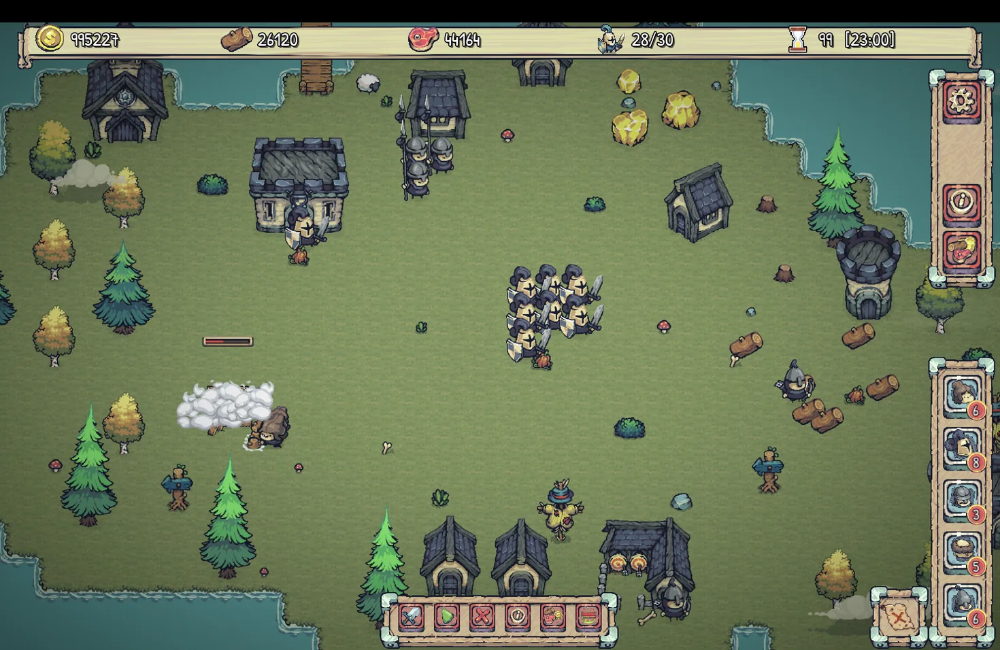
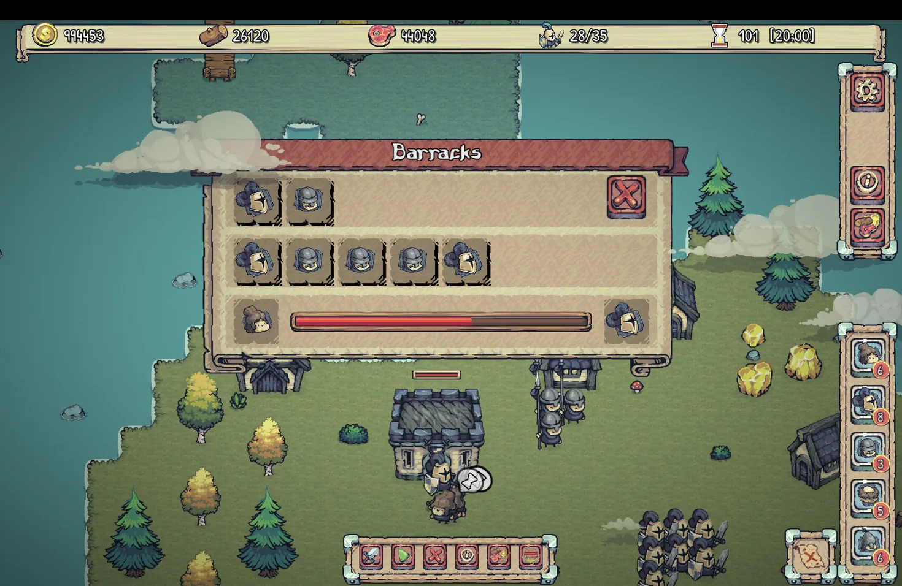
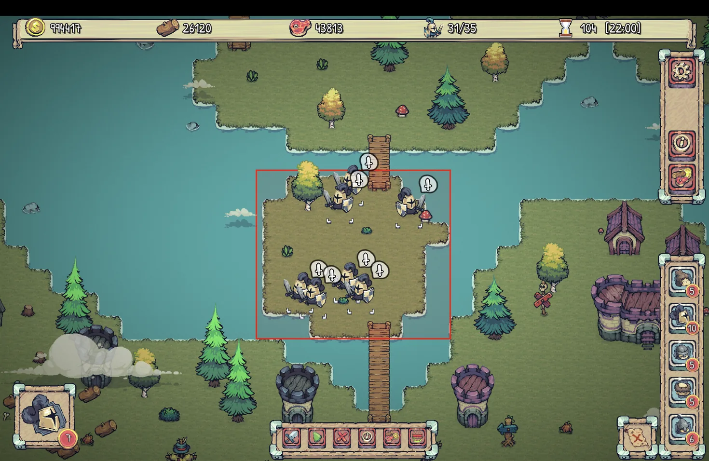
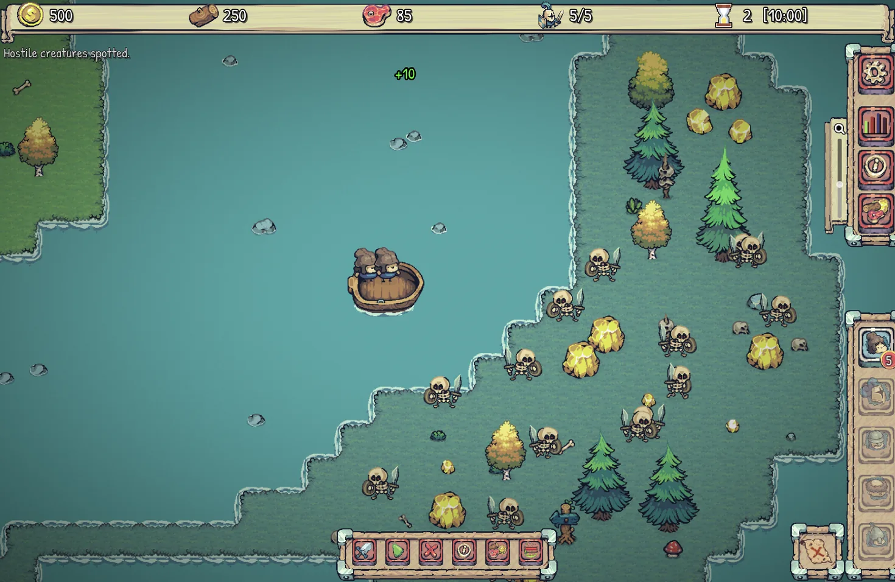
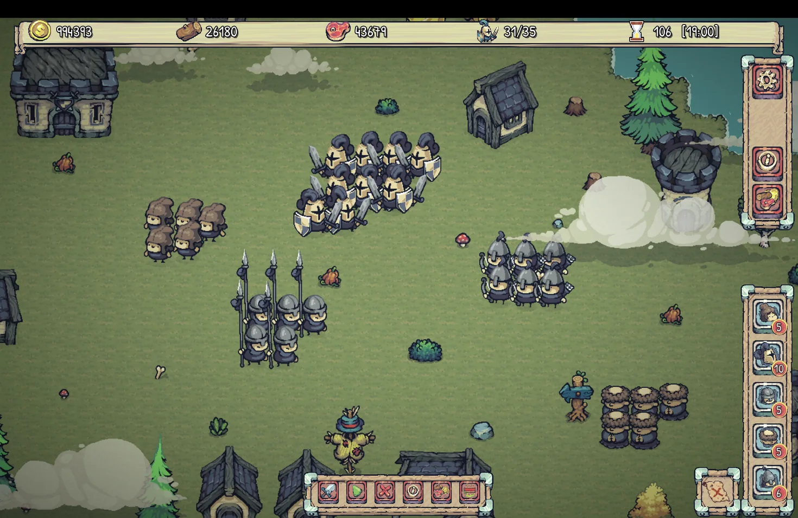
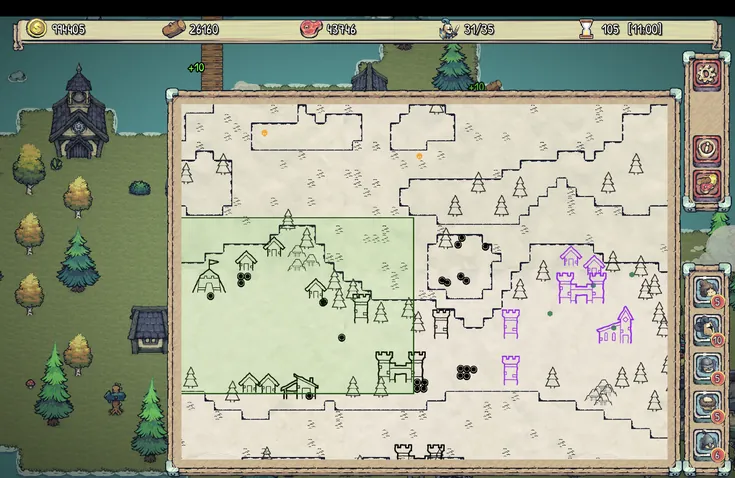
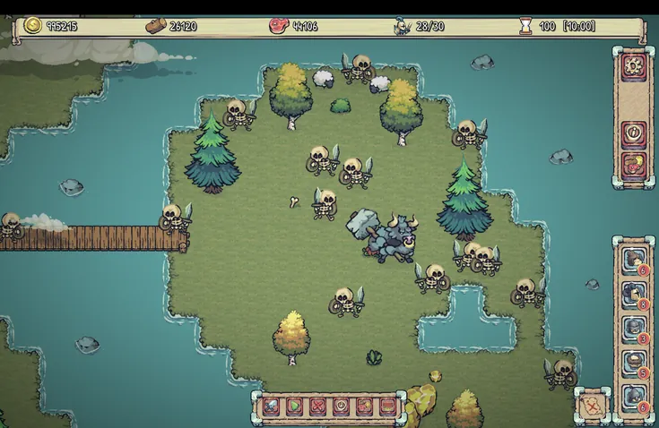
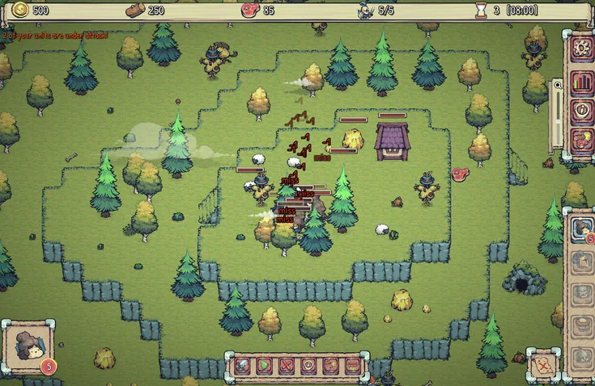

Buduj
Wznoś zamki, domy, koszary, wieże, klasztory i wiele więcej. Każdy nowy budynek otwiera przed twoją osadą kolejne możliwości.

Buduj. Rządź. Podbijaj.
Zbuduj osadę, nakarm swój lud, stwórz armię i wypłyń po koronę w spokojnej strategii czasu rzeczywistego, która nigdy cię nie pogania.
Zacznij od małej osady i rozwiń ją w królestwo, dom po domu, wieża po wieży, zamek po zamku.
Ścinaj drewno, wypasaj owce i wydobywaj złoto. Wszyscy jedzą, a każdy budynek ma koszty utrzymania, więc większe królestwo potrzebuje większych zapasów.
Wyszkol robotników na wojowników, łuczników, włóczników i mnichów, i dbaj, by byli najedzeni, wyleczeni i z dala od kłopotów.
Walcz z potworami i rywalizującymi królestwami, na lądzie i za morzem, o kontrolę nad mapą.
Wznoś zamki, domy, koszary, wieże, klasztory i wiele więcej. Każdy nowy budynek otwiera przed twoją osadą kolejne możliwości.

Zrównoważ ludność, mieszkania, zaopatrzenie i siłę militarną. Każdy wyszkolony żołnierz to robotnik, który przestaje zbierać surowce, a wszyscy muszą jeść.

Rozkazy się utrzymują: jednostki wykonują je do końca, a każdy rozkaz widać na mapie. Zleć oczyszczenie lub zebranie surowców z całego terytorium i zapisz grupy pod klawiszami skrótu.
Dowódź swoimi siłami w bitwach w czasie rzeczywistym przeciw potworom i rywalizującym władcom. Ustawienie liczy się tak samo jak liczebność.

Załaduj na łódź do sześciu jednostek i przepłyń wodę. Walcz z pokładu, wysiądź na wrogim brzegu i bądź gotów, że rywale zaatakują cię także od strony morza.
Pięć kampanii i 17 map: od pierwszej skromnej osady po lądowanie pod Hastings, pole bitwy pod Clontarf, skałę Mont-Saint-Michel i drogi Galii. Do tego pięć osobnych map na szybką partię.
Narysuj własny świat we wbudowanym edytorze map: wyspy, płaskowyże, mosty, stworzenia i rywalizujące królestwa. Udostępnij go jako jeden plik i graj na mapach stworzonych przez innych.

Zmień maleńką osadę w królestwo zdolne rządzić całym światem. Rywalizujące królestwa zbierają, budują i napadają według tych samych zasad co ty, więc każde zwycięstwo jest zasłużone.
W Castlefolk grasz w skali całego królestwa. Za murami czekają lasy do wykarczowania, wybrzeża do zasiedlenia, rywalizujący władcy do prześcignięcia — i dzikie stworzenia, które chętnie pożrą samotnego drwala.

Oddal widok do mapy na pergaminie, by zobaczyć cały świat: swoje terytorium, ziemie rywala i wszystkie niczyje obszary pomiędzy nimi.

Gobliny, trolle, gnolle i gorsze stworzenia zajmują ziemie, których pragniesz. Niektóre są utrapieniem. Inne kładą kres wyprawie.

Płaskowyże z klifami i wąskimi schodami zmieniają grzbiety w twierdze. Grzbiet jest tak silny, jak jego jedyne schody.
Wszystkie poniższe obrazy pochodzą z obecnej wersji gry.
Zobacz Castlefolk w ruchu.
Castlefolk powstaje na oczach graczy. Wszystko, co zaznaczone, już działa w grze; puste kółka to pomysły, które planujemy zrealizować. Bez dat — gra będzie gotowa, gdy będzie dobra.
Zbuduj osadę. Stwórz armię. Przepłyń morze. Sięgnij po koronę.
Dodaj Castlefolk do listy życzeń na SteamDodanie do listy życzeń pokazuje nam twoje zainteresowanie i przypomni ci o premierze.